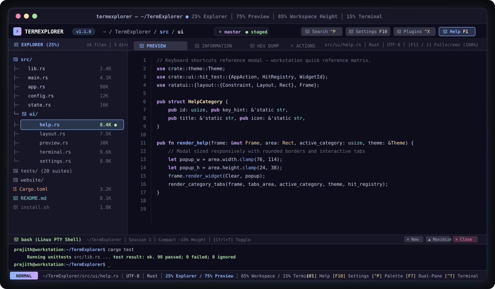

A keyboard-first developer environment engineered for Linux power users. Featuring a standardized 25% File Explorer / 75% Contextual Preview, compact embedded Linux PTY terminal drawer, instant sub-millisecond autocomplete, and a sandboxed WebAssembly plugin ecosystem.

Every keystroke, path completion, and symbol query is benchmarked to guarantee real-time interactive responsiveness without frame stutter.
No permanent screen-wasting sidebars. High information density designed by engineers for engineers.
Clean compact navigation. Shows breadcrumbs, Git status indicators, file size, permissions, and modification timestamps. Press [ and ] to resize or F7 for dual-pane side-by-side mode.
Generous screen real estate for syntax-highlighted source code, 24-bit half-block RGB images, CSV/TSV table rendering, SQLite inspection, hex dumps, and video metadata. Press F11 or z for Fullscreen mode.
Starts open by default at ~20-22% height. Spawns an interactive native Linux PTY shell. Resizable with { and } or maximizable to 80% screen height via Alt+F6 / Ctrl+Shift+T.
Pinned folders and recent directories are instantly accessible via Ctrl+P Command Palette with fuzzy acronym search (e.g. git, st, tdp) without consuming permanent screen space.
Press Ctrl+, or F10 to access the 14-category Settings Studio. Configure themes, icon packs, typography, keybindings, layout ratios, editor behavior, and configuration backups.
Extend TermExplorer with WebAssembly plugins compiled from Rust or C. Sandboxed execution via wasmi with SHA-256 integrity verification, permission enforcement, and hot reload.
Press F1 or ? anytime inside TermExplorer to bring up the integrated reference matrix with interactive tab categories.
| Subsystem | Shortcut Pill | Action | Description & Pro Tip |
|---|---|---|---|
| Workstation | F7 | Dual-Pane Explorer | Toggle side-by-side secondary explorer for bulk copy/move operations |
| Workstation | Ctrl+Right / Ctrl+Left | Resize Workspace Panels | Adjust Contextual Preview width (±5%, up to 85%) on the fly (Alt+] / Alt+[) |
| Workstation | F11 / z | Fullscreen Preview | Expand preview to 100% width for comprehensive image, PDF, or code inspection |
| Workstation | F6 / Ctrl+M | Telemetry Monitor | Toggle live CPU, RAM, Swap, Disk I/O, and Network bandwidth gauges |
| Menus | Ctrl+P / Ctrl+Shift+P | Command Palette | Instant fuzzy search for commands, pinned folders, and recent directories |
| Menus | Ctrl+, / F10 | Settings Studio | Interactive workstation settings studio across 14 deep configuration panels |
| Menus | g / Ctrl+G | Git Workbench | Repository branch status, staged diffs, and inline staging/commit workflows |
| Menus | Ctrl+Shift+X | Plugin Center | Discover, install, update, and manage sandboxed WebAssembly extensions |
| Terminal | Ctrl+T / ` | Toggle Terminal | Show or hide the integrated Linux PTY shell drawer anytime (15% height default) |
| Terminal | Alt+F6 / Ctrl+Shift+T | Maximize Terminal | Scale the terminal drawer to ~80% of application height for intensive CLI workflows |
| Preview | 1 / 2 / 3 / 4 | Preview Tabs | Jump directly to [Preview], [Info], [Hex/Metadata], or [Actions] tabs ([ / ] to cycle) |
| Editor | Enter / F2 | Open in Editor | Edit highlighted file in the built-in editor with < 0.2ms autocomplete and atomic saves (Ctrl+S) |
| Navigation | Space | Focus Preview | Instantly transfer keyboard focus into the 75% preview viewer |
| Navigation | / | Inline Fuzzy Filter | Instantly filter files in current directory without losing cursor position |
| File Ops | a / A | New File / Directory | Create new files (a) or new subdirectories (A) with in-place prompts |
| File Ops | d / Del | Delete to Trash | Safely move items to FreeDesktop Trash with confirmation safeguards |
Full 26-color canonical palettes across all 4 official Catppuccin flavors, with transparent background inheritance.
Default soothing modern dark theme
Medium-contrast night palette
Soft low-contrast ambient dark
Crisp, clean daylight palette
TermExplorer includes built-in font detection and automated one-click installation for JetBrains Mono Nerd Font: